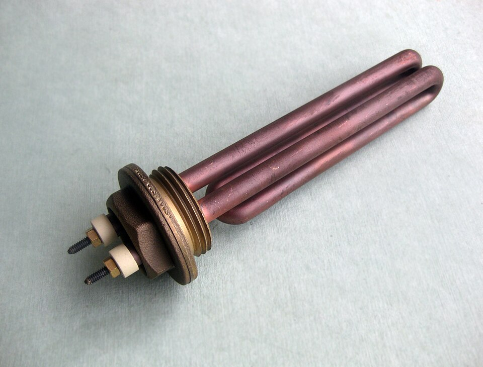

7. Resistència elèctrica¶
La resistència elèctrica és l’oposició que mostra determinats components (resistències) al pas del corrent elèctric. Com més gran sigui el valor de la resistència d’un component, menys corrent passarà a través d’aquest.
Les resistències tenen tres principals aplicacions:
** Generar calor. ** És una de les principals aplicacions. Per exemple, les resistències d’una torradora produeixen calor per torrar el pa. La resistència d’un forn, una rentadora o una manta elèctrica són altres exemples diaris.

Resistència a la calefacció d’una màquina de cafè.¶
Acosta.eu, CC BY-SA 3.0 Unported, vía Wikimedia Commons.
** Reduir el corrent. Un altre exemple es troba en les resistències que es connecten en sèrie amb els terminals d’un motor elèctric de manera que l’inici del motor es produeix suaument, sense bruscitat.
** Obteniu tensions intermèdies. ** En electrònica, aquesta és una de les principals aplicacions de resistències. Des d’una font de tensió de 5 volts, es poden obtenir tensions de 0 volts a 5 volts a través de tot el rang intermedi.
{kind=link}
Al següent circuit simulat, s’han connectat dues resistències de sèries per aconseguir una tensió inferior a la tensió de la pila. Modifiqueu el valor de les resistències per poder aconseguir una tensió de sortida exacta de 3,5 volts.
Ohms¶
El valor de resistència elèctrica es mesura en ** ohms **, abreujat amb la lletra grega omega [ω]. A la taula següent hi ha valors típics de diversos components comuns en les nostres resistències basades:
| Component | Resistència [ω] |
|---|---|
| 15 Watts of Power Car. | 10 ohms |
| Escalfador elèctric d’aire. | 22 ohms |
| Resistència a la limitació actual d’un LED indicador. | 220 ohms |
| Resistència a l’entrada d’un amplificador d’àudio. | 10.000 ohms |
| Resistència a l’entrada d’un canter. | 10.000 000 ohms |
Ohmimeter¶
Un ** Ohmimeter ** és un dispositiu que permet mesurar la resistència d’un circuit compost per resistències. L’Ohmimeter injecta una certa quantitat de corrent al circuit a poder mesurar. Per aquest motiu, totes les bateries del circuit s’han de desconnectar abans de mesurar la resistència elèctrica amb aquest dispositiu.
Per simular un ohmímetre, l’hem de triar entre el `` dibuixar `` ...
A la següent simulació, afegiu els ohmetters necessaris per mesurar el valor de resistència de R1 en sèrie amb R2 i el valor de resistència de R1 en paral·lel amb R2.
Exercicis¶
- Què és la resistència elèctrica?
- Quines aplicacions poden tenir una resistència elèctrica?
- En quines unitats es mesura la resistència elèctrica? Nom 3 elements diaris i la seva resistència elèctrica.
- Quin és el nom del dispositiu que mesura la resistència elèctrica? Com us heu de connectar a les resistències?